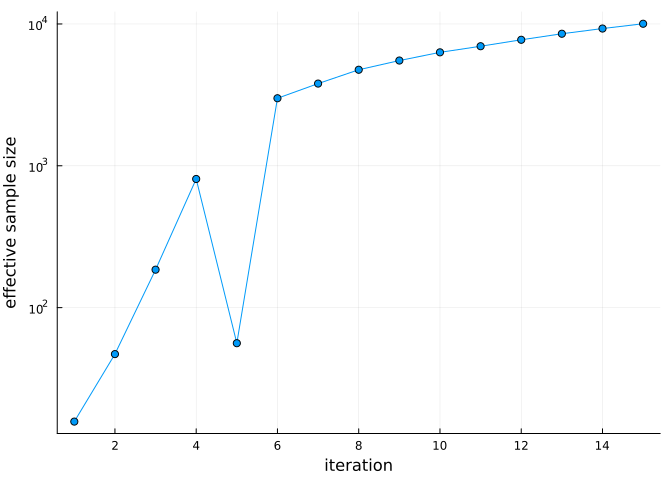

Fast AMIS
Simon Frost
- Overview
- Why a coarser step is enough
- The recipe
- When to stop
- Against a run at the paper’s settings
- Checking against the published model
- Limits of the recipe
Overview
The paper’s AMIS is 60 iterations of 10 000 draws at a time step of Δt = 0.1: 600 000 likelihoods, or about a day on 8 threads. This vignette runs a much cheaper version with Δt = 1 and 15 iterations of 1000 draws, which takes minutes. It then checks the result against the likelihood at Δt = 0.1 and against a run at the paper’s settings.
The result is an approximation to the published model, so it should be reported as one.
Why a coarser step is enough
AMIS weights draws by differences in log-likelihood, so it needs those differences to about 0.01–0.1, far short of the 1e-12 that the port was checked to. For 32 draws near the posterior, the error against Δt = 0.1 is:
| Δt | Faster by | sd of the log-likelihood error |
|---|---|---|
| 0.2 | 2.2× | 0.0012 |
| 0.5 | 5.2× | 0.0096 |
| 1 | 10.2× | 0.038 |
| 2 | 17.8× | 0.15 |
| 6 | 45.8× | 1.42 |
The error grows roughly as Δt². A constant offset would not matter, because AMIS normalises its weights, so the table gives the spread between draws. Of these steps, a full AMIS run has been checked only at Δt = 1.
The recipe
Only delta_t, iterations and samples differ from the paper’s set-up. The initial proposal is the paper’s Table 2 for the T28 index, in the order of free_parameters:
using AshDieback
using LinearAlgebra
using Plots
using Random
using Statistics
BLAS.set_num_threads(1) # the threads go to the likelihoods of a batch
data = load_peoc_data()
θ0 = AshDiebackParameters(; r_symp = 1000.0, r_allee = 0.0,
beta_0 = 24.0, beta_1 = 0.0, D = 18.0,
S_sat = 90.0, gamma = 21.50001, C_pers = 1.0,
C_init = 0.0085, kappa = 0.05)
priors = reduced_model_prior_ranges()
settings = ModelSettings(; delta_t = 1.0)
fast = AshDiebackPosterior(AshDiebackProblem(data, θ0; settings), priors)
params = free_parameters(fast)
m1 = [24.0, 18.0, 90.0, 0.0085, 0.05]
Σ1 = Diagonal([3.0, 0.4, 1.0, 1e-8, 1.5e-5])
ess = Float64[]
res = amis(Xoshiro(2), fast, m1, Matrix(Σ1); iterations = 15, samples = 1000,
callback = (r, k) -> push!(ess, effective_sample_size(r)))
effective_sample_size(res)10033.654736420482From the command line, scripts/run_amis.jl does the same with a checkpoint after every iteration, and resumes from it:
julia --project --threads=8 scripts/run_amis.jl runs/amis_fast 15 1000 2 1.0When to stop
Stop on a stable effective sample size, not after a fixed number of iterations:
plot(1:length(ess), ess; marker = :circle, yscale = :log10, legend = false,
xlabel = "iteration", ylabel = "effective sample size")
With batches this small, a few draws can briefly take most of the weight. Here the effective sample size falls sharply at iteration 5 and recovers at iteration 6, so stopping at 5 would have been a mistake. If it has not settled, carry on from res with amis(rng, fast, res; iterations, samples). Much smaller batches can fail outright, with a DegenerateProposalError when the proposal covariance turns singular.
The proposal should also have stopped moving. This is how far its mean moved over the last five iterations, in posterior standard deviations:
X, _, w = amis_draws(res)
μ = X * w
Xc = X .- μ
Σ = (Xc .* w') * Xc'
sds = sqrt.(diag(Σ))
moved = abs.(res.means[end] .- res.means[end - 5]) ./ sds
NamedTuple(zip(params, round.(moved; digits = 3)))(beta_0 = 0.002, D = 0.003, S_sat = 0.016, C_init = 0.012, kappa = 0.014)A stable effective sample size does not show that the tails have been sampled. The proposals are Gaussian, and the posterior’s tails along the ridge between β₀ and D are heavier, so a rare draw out there gets a very large weight. So also look at the largest weight, against the average:
(; largest = maximum(w), times_average = maximum(w) * length(w))(largest = 0.002625475484836835, times_average = 39.382132272552525)In the reference run below, one draw at iteration 44 (β₀ = 28.45, D = 16.17) took a share about 1900 times the average and cut the effective sample size from 252 781 to 26 457. It is a real draw: its likelihood recomputes exactly, and the likelihood is smooth around it. scripts/check_amis_weights.jl prints these figures for a saved run, and the run’s summaries without its largest weight.
Against a run at the paper’s settings
The reference is a run of scripts/run_amis.jl at Δt = 0.1 with batches of 10 000 and a different seed, to the full 60 iterations. Its effective sample size is 78 521, or 356 175 without the draw above. Without that draw its means move by at most 0.013 standard deviations, and the standard deviation of β₀ falls from 1.359 to 1.327. Each row gives the mean, standard deviation and 95 % interval of the fast run, then of the reference, then the difference of the means in reference standard deviations:
reference = (; beta_0 = (23.1286, 1.359, 20.836, 25.907),
D = (18.6395, 0.7419, 17.206, 20.015),
S_sat = (92.046, 1.062, 89.993, 94.165),
C_init = (0.00853958, 9.05e-5, 0.0083615, 0.0087155),
kappa = (0.0565465, 0.009844, 0.03773, 0.076345))
s(x) = lpad(round(x; sigdigits = 4), 10)
for (j, n) in enumerate(params)
r = reference[n]
q = [weighted_quantile(X[j, :], w, p) for p in (0.025, 0.975)]
println(rpad(n, 7), "fast", s(μ[j]), s(sds[j]), s(q[1]), s(q[2]))
println(rpad("", 7), "ref ", s(r[1]), s(r[2]), s(r[3]), s(r[4]),
" ", round((μ[j] - r[1]) / r[2]; digits = 3))
endbeta_0 fast 23.12 1.309 20.82 25.76
ref 23.13 1.359 20.84 25.91 -0.009
D fast 18.64 0.7257 17.29 20.05
ref 18.64 0.7419 17.21 20.02 0.004
S_sat fast 92.04 1.072 89.96 94.17
ref 92.05 1.062 89.99 94.16 -0.008
C_init fast 0.008539 8.987e-5 0.00836 0.008713
ref 0.00854 9.05e-5 0.008362 0.008716 -0.012
kappa fast 0.05646 0.009854 0.03777 0.07608
ref 0.05655 0.009844 0.03773 0.07634 -0.009The means agree to within about 0.01 standard deviations, and the intervals nearly match. The correlations agree to within about 0.02, including the strongest, between β₀ and D:
Σ[1, 2] / (sds[1] * sds[2])-0.9867120679699014The reference gives −0.987 too, so the step size does not explain why the paper’s Table 3 has −0.97. The other entries of that table agree with the reference to within 0.01. This one difference is unexplained.
Checking against the published model
This check needs no reference run, so use it on every fast run. Resample draws by their weights and recompute their likelihoods at Δt = 0.1. If the fast run is sound, the changes are nearly the same for every draw, and weights correcting for them are nearly equal:
exact = AshDiebackPosterior(AshDiebackProblem(data, θ0), priors)
rng = Xoshiro(1)
cw = cumsum(w)
picks = [searchsortedfirst(cw, min(rand(rng), cw[end])) for _ in 1:200]
shift = zeros(length(picks))
Threads.@threads :dynamic for k in eachindex(picks)
x = view(X, :, picks[k])
shift[k] = loglikelihood(exact, x) - loglikelihood(fast, x)
end
c = exp.(shift .- maximum(shift))
efficiency = sum(c)^2 / (length(c) * sum(abs2, c))
(; shift_sd = std(shift), efficiency)(shift_sd = 0.021952585231057305, efficiency = 0.9995175251551395)An efficiency of 1 means that correcting to Δt = 0.1 would change nothing. If it is much below 1, use a smaller step.
The best draw also lands next to the paper’s θmax, without having been started there:
xbest, _ = best_sample(res)
θmax = [23.26, 18.51, 92.0, 0.00855, 0.056]
NamedTuple(zip(params, round.(xbest; sigdigits = 4)))(beta_0 = 23.25, D = 18.55, S_sat = 91.99, C_init = 0.00854, kappa = 0.05706)At Δt = 0.1, it and θmax score:
(; best_draw = loglikelihood(exact, xbest), θmax = loglikelihood(exact, θmax))(best_draw = -24717.278402269425, θmax = -24717.21496294487)Limits of the recipe
- It relies on a good start. Table 2 comes from the paper’s earlier exploration, so this recipe refines a known region and does not search for one. The errors above were measured near the posterior and may be larger elsewhere.
- It has been checked for one case: the reduced model, the T28 index and data to 2019. Repeat the check above for anything else.
- It will rarely reach the far tails. With 15 000 draws, the fast run’s largest weight is a small one, and its standard deviation for β₀ (about 1.31) is narrower than the reference’s 1.36 or its 1.33 without the draw above. So use it for means and central intervals, and be more careful with far tails. Its tidy effective sample size partly reflects not having met such a draw.
- The saving depends on what it is compared with. The fast run took 9.5 minutes on 4 threads, and the reference took 25.1 hours on 8, with both sharing a busy machine. That is about 160 times faster than all 60 iterations. But the reference had effectively converged by iteration 10, after 4.4 hours, and against that the saving is about 28 times.
- Use Δt = 0.1 for published estimates, or report the step. The correction above can be applied to all the draws at the cost of one likelihood each at Δt = 0.1.